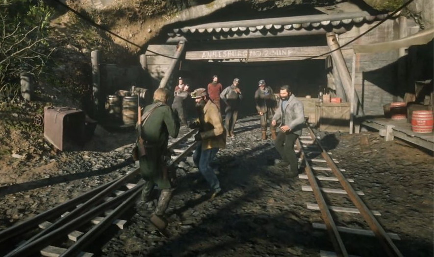
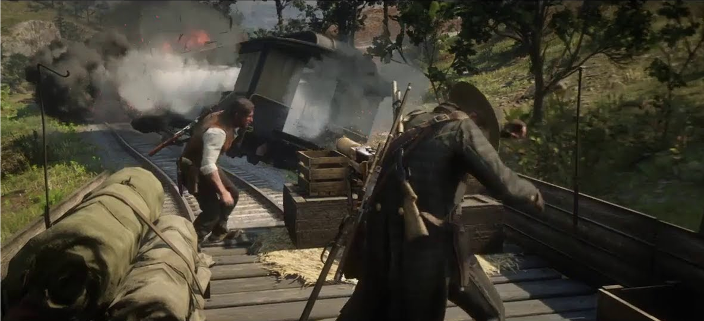
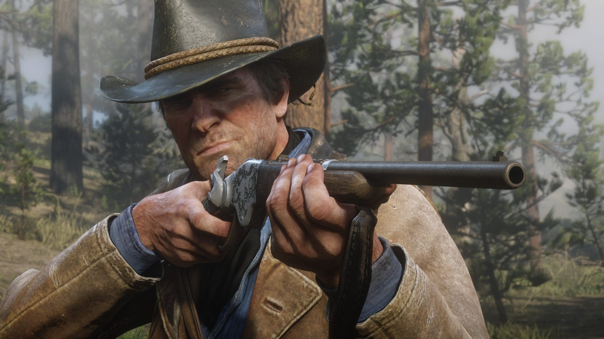
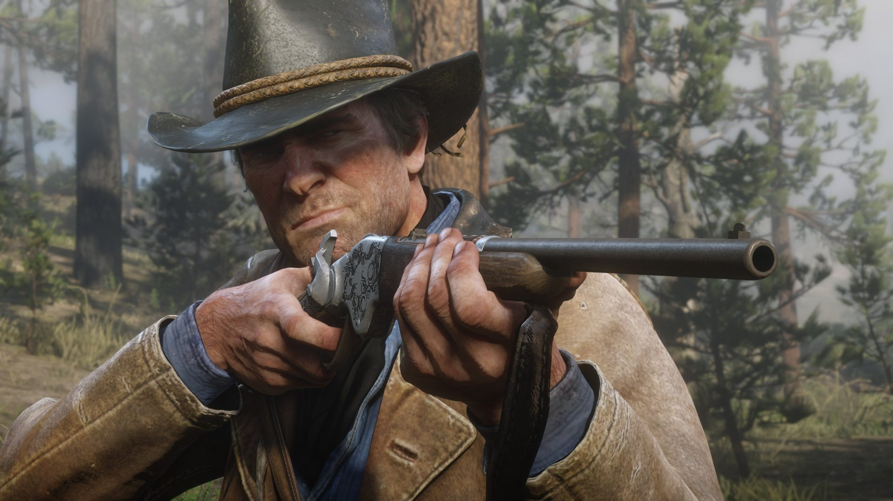
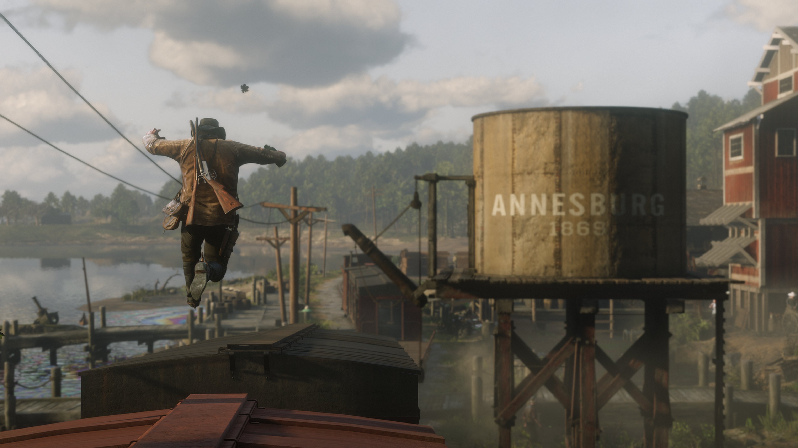
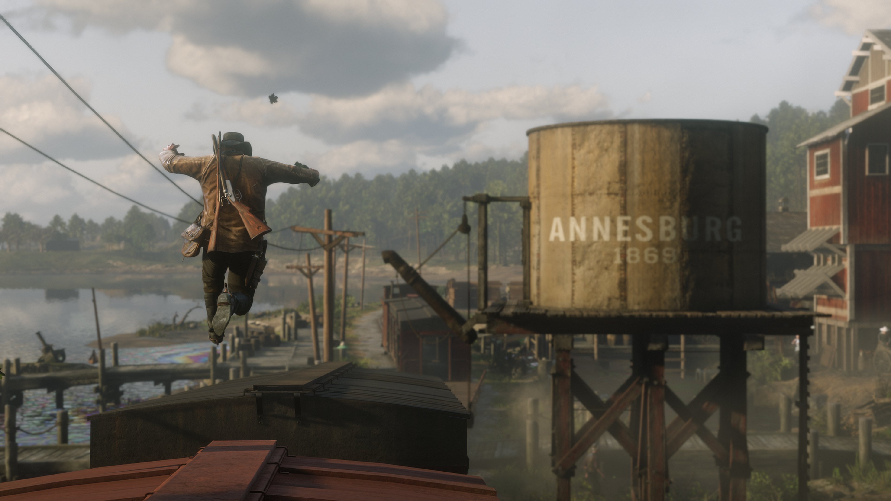

Arthur Morgan is the central character and main protagonist of Red
Dead Redemption 2. Set in 1899, the game revolves around the life
of Arthur, a lifelong outlaw and member of the Van der Linde gang.
If you want to read the reviews.
Click on Reviews button, it will take you to the reviews section.
Parents
Arthur Mother: Beatrice Morgan
Arthur Father: Lyle Morgan
Arthur mother died of unknown causes, while his father was
a petty criminal and outlaw. In 1874, when Arthur was 11 years old,
his father was arrested for larceny.
Arthur later witnessed his
death and, despite a strained relationship with him, also donned
his hat and kept a picture of him.
Gang Member
Young Arthur with Hosea and Dutch.
Arthur is on the right side.
Arthur Morgan was effectively adopted by Hosea Matthews and
Dutch Van Der Linde as a teenager. Having lost his parents at
a young age, Arthur became Dutch's first protégé.
Arthur had a son, Isaac, with a waitress named Eliza,
Arthur demonstrated regular support for them until they were killed by
robbers.
Arthur never fully coped with their deaths, and the
incident had a profound impact on Arthur's loyalty to the Van der
Linde gang, viewing them more as family.
Love
Arthur Morgan and Mary Linton
During their youth,
Mary Linton was in a romantic relationship with Arthur Morgan and
the two were deeply in love.
But it ultimately fell through
due to Arthur's life as an outlaw and affiliation with
the Van der Linde gang, leading to prevalent disapproval of her
family as a result, particularly her father.
Camp
Camps are temporary resting points established in the wildernes,
where Arthur and the gang unwind and pass the time doing various activities,
like: Playing cards, taking rest, helping gang members, talking to members, chop woods etc.
Arthur can increase his honor by carrying out various chores in camp by himself.
Each part of the camp can be upgraded to improve what it has to offer,
and doing so can provide benefits for Arthur while he's away from camp.
Story Mode
Chapter 1
Arthur story begins from chapter 1 from a location called Grizzlies Mountains, so
after a failed robbery, the gang flees from Blackwater into the
Grizzlies Mountains, where Arthur and gang members stays for a
while, till the weather gets stable.
Later when weather gets
stable weather, gang rides down from mountain to set up camp at
Horseshoe Overlook near Valentine Town.
Goodbye Grizzlies
Chapter 2
Camp: Horseshoe Overlook
After a break in the weather, the gang head down from the
mountains, and decides to hide at Horseshoe Overlook.
The nearest town was Valentine town where Arthur did his most of
the main and stranger missions such as helping people, robbery,
killing, fighting etc.
Town: Valentine [Polite Society]
Valentine is a livestock town, a short ride away from the
Horseshoe Overlook camp, the first camp the gang makes after
their exodus from the grizzlies mountains.
Mr Downes
Mr Thomas Downes is on the right side, he had tuberculosis, when Arthur collects
debt money from Mr Downes in chapter 2, Arthur threatens him and beats him to
retrieve money, while doing that, downes coughes blood on Arthur's face.
Mentioning Mr Downes in Arthur Morgan life is important,
and to know why, you will have to keep reading.
Chapter 3
Camp: Clemens Point
The gang runs out of Valentine after robbing a train and
decides to move from Horseshoe Overlook and hide at Clemens points,
near the town of Rhodes. As the Pinkertons (bounty hunters) were looking
for the robbers (dutch gang).
Town: Rhodes
In chapter 3, Arthur keeps doing mission and keeps collection
money from the people who borrowed money, he helps two lovers meet.
Valentine Bank Robbery
Gang robs valentine town bank.
O'Driscolls
In this chapter there's a mission called 'Blessed are the Peacemakers'
where Arthur and dutch meets another outlaw gang called 'O'Driscolls',
as they do not accept peace and kidnaps Arthur Morgan.
O'Driscolls Kidnaps Arthur
Arthur is hanging upside down, O'Driscoll keeps him in their
camp, tortures him and beats him.
Arthur Escapes O'Driscolls
But Arthur succeeds in escaping and returns to their gang.
Chapter 4
Camp: Shady Belle
Things ended poorly in Rhodes, little Jack Marston was kidnapped
and sent to Saint Denis town to a guy called 'Angelo Bronte'.The Pinkertons (bounty hunters)
showed up again, so the gang moves to Shady Belle (new campsite).
After moving to 'Shady Belle', Arthur, Dutch and John (Jack Father)
visits Saint Denis city.
City: Saint Denis
Saint Denis is a well developed modern city, it is the largest city
in Red Dead Redemption 2 and as a result, has the most extensive
public transport system in the entire RDR2.
In chapter 4 Arthur, Dutch and John rescues Jack from a man name
Angelo Bronte.
Angelo Bronte Mansion
Arthur, John and Dutch at Angelo Bronte Mansion to recue Jack.
Angelo Bronte A Man Of Honor
Angelo tells them to do a job for him, if they want Jack back.
He tells to kill robbers who have been stealing things from the grave.
Jack Rescued
Jack is seen with his mother Abligail and father John.
Later in the mission, Arthtur collect debts as ausual from the people.
Arthur Helps Monk (Poor)
Arthur Helps a poor guy (Brother Dorkins) to find two brothers
who were kidnapped in human trafficking.
Sister Calderon
Arthur helps Sister Calderon's, by getting back his crucifix
which was stolen by a street kid.
Sister Crucifix
Brother Drokins (Poor Monk) and two brothers who were saved by
Arthur are present in this video.
Mary & Arthur
Mary Linton asks Arthur for help, mary father sells valuable
family heirloom to a seller, which Arthur retrives and returns it
to Mary.
Arthur Saves Tilly
Later 'Tilly' dutch gang member gets kidnapped and Arthur rescues her.
In next mission Arthur meets a person name 'Rains Fall', his son 'Eagle Flies'
saves Arthur life in a mission where they steal reports from oil factory.
Rain & Eagle
Rain Fall is on the left side and his son Eagle Flies is on the right side.
Rhodes Bank Robbery
In next mission Arthur and gang robs 'Rhodes' bank. trolley-station-robbery
Later, O'Driscolls kills Kieran's and sends dead body to 'Shady Belle' where Arthur
and Sadie Adler shoots O'Driscolls boys.
Trolley Station Bank Robbery
Arthur Dutch and some gang member robs a Trolley station.
Later Dutch decides to kill Angelo Bronte with Arthur because Dutch felt that Angelo betrayed him.
Saint Denis Bank Robbery
The Last mission of chapter 4 where Arthur and gang prepare to rob the
Saint Denis bank, before retiring and escaping from Saint Denis. They succeeds in robbery
but they loose 'Hosea Matthews' gang member as he gets killed by 'Milton'.
Milton Kills Hosea
Milton is a high-ranked detective in the Pinkerton National Detective Agency.
After Dutch robs his train, Leviticus Cornwall hires Milton and his subordinate,
Agent Edgar Ross, to track down the Van der Linde gang and bring Dutch van der
Linde to justice.
Hosea Matthews was the co-founder and second-in-command of
the Van der Linde gang.
Chapter 5
Island: Guarma
The bank robbery in Saint Denis was a disaster. The gang has been
almost destroyed, several members were killed and arrested.
Everything seemed lost. Some gang member escaped and some of them
inclding Arthur escapes in a ship with money.
Unfortunately, because of sea storm Arthur and some of their
gang members ends up on an island called 'Guarma'.
Gang
In chapter 5, Dutch, Arthur, Javier, Bill, and Micah ends up
in Guarma Island and they get arrested by the people who were
in blue uniform. Later in the mission Arthur and gang succeeds
in escaping the island and arrives in Lakay.
Arthur Rides To Camp
Unshaken soundtrack by D'Angelo.
Camp: Lakay
Arthur reunites with the gang at Lakay. After some time Milton
arrives with his Pinkertons, and attacks the camp, but Arthur
and Sadie Adler saves the gang members.
Sadie Saves Arthur
Sadie Adler saves Arthur too, as at that time Arthur was extremely sick.
Later when Arthur visits Saint Denis, he passes out, and when
he wakes up, he finds a stranger dragging him to the doctor's
surgery. Doctor tells Arthur that he is very sick and has a
progressive disease called 'Tuberculosis' and he won't be able
to help Arthur.
Arthur Visits Doctor
When Arthur comes out of Surgery, Arthur remembers few things
friends and lovers have said to him over the years as he ponders
his own death. He remembers what he used to say:
"We can't change what's done, We can only move on."
Charles and Arthur
In the last mission Arthur and Charles heads to find new Campsite.
They finds a place called 'Beaver Hollow' near Annesburg Town.
Arthur and Charles Saves Meredith
They finds a woman name 'Meredith' locked up in a cage,
god knows for how many days she was locked.
The folks who kidnpped her did dirty things with her.
The women didn't even slept for days, she was so terrified,
so, Arthur calmed the terrified women, then Charles tells Arthur to take her home,
then Arthur takes Meredith to her mother in Annesburg Town.
Meredith Returns To Her Mother
Arthur safely returns Meredith back to her mother in Annesburg town.
Her mom gets happy when she sees her daughter Meredith, as her mother thought Meredith
was dead.
Annesburg Town
Chapter 6 Camp: Beaver Hollow
Sisika Island: John
In capter 6, Arthur and Sadie helps John Marston to break free
fom prison, as he was arrested in chapter 4 when they tried to
rob the Saint Denis bank. Arthur also saves Adie Sadler from getting
killed.
Arthur Meets Edith Downes
Later in the mission, when Arthur visits Annesburg, he meets Mr Downes
wife Edith Downes where she's seen in poor condition. Arthur says sorry
to her, as what he done to Mr Downes.
Edith tells her son 'Archie' works in coal mine
where the foreman doesn't like her son, so they makes Archie work hoarder,
makes thing worst for him.
Arthur says he can help but
Edith says "I don't want your help", but still Arthur decides to helps her son.
Arthur Fights Foreman

Arthur heads to coal mine, finds Archie and tells foreman to leave Archie alone, but they do not hear and
starts fighting with Arthur.
Arthur Saves Archie
Arthur fights foreman and frees Archie from foreman, gives
him money and tells him to go some nice place, away from Annesburg,
with her mom.
Arthur, Edith & Archie Downes
Arthur, Edith and Edith son Archie Downes.
Edith Downes does not accepts Arthur's money, she continues to sell
her body. Archie worries for his mother's safety, Archie Downes asks for help and tells
Arthur to head to Willard's Rest to look for her.
Arthur Saves Edith
Arthur saves Archie mother from the man where she was trying to sell her body.
Arthur says sorry to Edith for whatever he
had done in past with Mr Downes, Arthur says
he is suffereing from tuberculosis because of his foolishness (referred to Mr Dwones).
Arthur tells her not to kill herself.
Arthur Offers Money
Arthur offers the money, as they did not had money and tells them to move out from Annesburg,
and go some nice place and start a new life.
Thomas Downes
Edith Downes Husband and Archie Downes Father: Mr Thomas Downes
Mr Thomas Downes was the reason for Arhtur Tuberculosis.
Arthur Donates
Next time when Arthur visists Saint Denis he meets Sister Calderon
and donates food and money for poor.
Sister Talks To Arthur
Arthur talk to her and says he is an outlaw
and sister says to Artur "You have a good heart", "Outlaw is just a word.
We must do what we can".
Arthur Helps Two Lovers
Later, in the mission Arthur helps Penelope Braithwaite and Beau Gray
to escape their families, as they were in love, Arthur helped them,
when they were in Rhodes, if you remember.
Arthur Meets Leopold Strauss
In next mission Leopold Strauss tells Arthur to collect the debt money
as ausual from people who borrowed, instaed of collecting money Arthur ends up
helping them and giving money so they can live.
Arthur Helps Soldier and Her Wife
Arthur helps soldier and her native indian wife, from the man that
tried to kill soldier.
Arthur Cancels Debt
The soldier offers a silver locket for the debt
but arthur denies it, and tells to keep the locket for himself and tells him
to get his wife somewhere safe.
Arthur Helps Mrs. Londonderry
Arthur Morgan realises that Leopold Strauss was taking money from desperate peoples.
Related video is given below.
Arthur Morgan Cancels Debt
After seeing the senselessness of Strauss's loaning,
Arthur rides back to the camp to throw him out of the camp.
Leopold Strauss (Money Lender)
Feeling guilty of the tragedies caused by Strauss' actions,
Arthur tells 'Leopold Strauss' to leave, and find a normal job.
Arthur says to Leopold "You and me aren't decent,
but those people were."
Related video is given below.
Bye Leopold Strauss
Strauss was responsible for ruining so many
lives with his loansharking, in addition to the fact that Strauss
was inadvertently responsible for getting Arthur sick, from his
confrontation with Thomas Downes.
Arthur Talks To John
In this chapter Arthur tells John "When the time comes you gotta run
and don't look back (take your wife and child, go away from here
and start a new life).
Arthur & John Convo
Bridge to nowhere
Arthur & John Serious Convo Part 2
Arthur Quotes "I am seeing things a lot more clearly now,
I wish things were different, but it weren't us who changed." Here Arthur
refers to Dutch. Arthur says Dutch is changed now.
In Next mission, When Arthur helps Rain Fall friend Captain Monroe with Charles, Arthur meets
Sister Calderon at train station,and talks about how he has been his whole life.
Arthur says he's dying and afraid. Related video is given below.
Arthur meets Sister
Emotional talk "Arthur and Sister Calderon". Sister can only be seen,
if Arthur has high honour. Else, If Arthur has low honour then he'll see
Reverand Swanson.
O'Driscolls Hanged
After that Arthur, Dutch and Sadie heads to Saint Denis where O'Driscolls
gets hanged (an outlaw gang who kidnapped Arthur).
Arthur & Sadie Kills Leftover O'Driscoll Boys
After the O'Driscoll death Arthur helps Sadie to kill left O'Driscolls boys once and for all.
Arthur Meets Charles and Rainfall
In next mission Arthur meets Charles and Rainfall, and Rainfall tells Arthur that
his son 'Eagle' was captured and taken to prison to hang him for treason.
Arthur & Charles Saves Eagle
Arthur and Charles saves Eagle flies from prison and takes back to Wapiti Reservation.
Wapiti Rainfall Reservation
Again in the next mission Arthur helps Rainfall son Archie in the oil factory.
Oil Factory
In this, mission there was a scene where a man was attacking Arthur
with knife and Arthur asked Dutch to help, and Dutch avoids Arthur.
Video is given below.
Dutch Leaves Arthur To Die
Dutch avoids Arthur while Eagle and Arthur both helps each other.
Eagle Death (Rainfall Son)
Rains Fall weeps as he watches his last son 'Eagle' die, at which point Arthur
and Charles leave him alone to mourn.
Straight after, when Arthur leaves from Wapiti, within few seconds
Arthur fells from his horse and passes out.
A Family Helps Arthur
A family helps helps Arthur Morgan, and offers a medicine to drink.
Train Rob Last Job

Mission 88 'The Last Job' where Arthur and gang ride to Saint Denis
to intercept and rob a train carrying army supplies and payroll,
headed for the recently destroyed Bacchus Bridge.
Destroyed Bridge
Gang Robbery Success
After robbing the train, Arthur asks for John and Dutch replies, that "John is Dead,
we lost him", which maakes Arthur sad.
Red Dead Redemption
Arthur Morgan Final Mission
With John assumed dead (the last job mission), and Abigail captured by Pinkertons,
Dutch cuts them loose, and rides for Beaver Hollow. Arthur
and Sadie heads to Van Horn to rescue Abigail.
Milton Tries To Kill Arthur
At this point, Arthur gets extremely sick, still he saves Abligail and while returning back,
Milton gun points Arthur and tries to kill Arthur,
but Abligail shoots Mr Milton and saves Arthur.
Related video 'MILTON AND ARTHUR' is given after
the 'ABLIGAIL KILLS MILTON' image.
Abligail Kills Milton
Milton and Arthur
Arthur Last Ride
This is the video song that plays when Arthur's rides back to the camp (Arthur Last Ride)
it's called 'That's The Way It Is' by Daniel.
When Arthur reaches camp, he tells dutch that Micah is the rat. Related Video is given below.
Arthur Tells Dutch About Micah
Gang falls apart
Arthur Horse Death
When Arthur and John were running away from Pinkertons, Arthur horse gets killed by a bullet.
This image shows how Arthur was emotionally attached to his horse.
Arthur Saves John
Arthur saves John, and gives him his hat (to John), tells him to go and
don't look back. As, John heads back to their family, Arthur creates distraction
for him. Exact scene dialogues are provided in the last Tribute video called 'Thats the way it is'.
Right after when John leaves, Micah fights Arthur. Watch the 'Arthur Last Few Minutes'
video to see what happens to Arthur Morgan. Video is given after the 'ARTHUR FIGHTS MICAH' image.
Arthur Fights Micah
Arthur Last Few Minutes
Arthur's last 4:40 minute.
In the end after saving John Marston Arthur dies peacefully.
No matter what, Arthur Morgan dies. There's currently no secret
ending where he somewhat survives, fading into the mists of time under
a new name. He either dies from his
tuberculosis, a bullet to the head, or a knife in the back, depends on
the honour level an Arthur has.
Arthur's last words to Dutch
"I gave you all i had, I did".
Arthur Grave
Mary Linton (Arthur Love) visits Arthur Grave.
Players who finished the game with high Honor will find Arthur's
grave covered in flowers.
Arthur Morgan joined the Van der Linde
gang as a young man, and in his later years he realized Dutch wasn't
the man he believed in.
Most of the stranger missions are not covered in here, where Arthur
helps people or does the job for them. To know more about the game,
Play the Game or you can simply watch the gamplay walkthrough on YouTube.
You might not understnd the game or Arthur Morgan character just by reading about Arthur's Morgan
Life, you'll have to play the game and interact with the character to understand Arthur Morgan.
Whoever has completed the game will understand what I am talking about.
A 'Must Play' game.
ROCKSTAR GAMES best character so far "Arthur Morgan", if you'll play
the game, you will deeply emotionally get attached to Arthur Morgan.
Tribute to Arthur Morgan & some video songs
are given below.
A Good Man: Tribute to Arthur Morgan
A Great Man
Cruel World
See The Fire In Your Eyes
That's The Way It Is
Reviews are given below by the players who have completed the game.
Feel free to write a review.
Rainer
This is enough to make a grown man cry, and that is okay.
Philip
The first game thats ever made me cry at a character death,
and I'm not an emotional person but damn this game brought a tear
to me eye! Arthur was a good man.
Sven
My heart melt when Arthur gave his hat to john.
Not gonna lie, when Arthur said “thank you” in his dying horse’s ear
actually made my eyes water. Arthur horse carried him through the whole adventure.
Stanky
Ok, so I searched up “Arthur Morgan” on google and it said “Fictional Character”.
But when he died it felt like somebody that was really close to me died.
It’s crazy how Rockstar Games can create a character so unique like Arthur Morgan.
Cayde
Arthur Morgan is the best damn character Rockstar ever came up with.
Red Dead Redemption is the only game series that made me cry.
Trorsus
I dont think anyone that played this will ever forget this ending.
Jamy
Dutch raised Arthur. Now, Dutch left Arthur to die.
All the memories, eaten by Micah the rat.
Fenrir
Not gonna lie I almost cried on the mission that played
"That's The Way It Is" song. This game is amazing.
Rockstar doesn’t make games, they produce experiences.
You didn’t play RDR2, You EXPERIENCED RDR2.
Meeko
When Arthur says “I gave you all I had” that line hits right in the feels.
I cried for a good 5 minutes after this scene. His death was so frustrating and sad.
Our man Arthur deserved better.
Siska
Loosing Arthur feel's like loosing someone really close to me,
My God! Arthur deserve so much better than this.
Ahnaf
I don't know why but I feel like Arthur was more than a "video game character".
Bic
Damn I remember before this game was released that a lot of people,
including myself, hated that we'd playing some new guy called Arthur instead of John.
Turns out Arthur was one of the most impactful characters I've ever had the honor of playing as.
Badger
One of the saddest thing was... watching him die slowly and just to get finished
of by a rat and get betrayed by Dutch after twenty years over 9 months. RIP Arthur.
Ena
They played just the right song to make me cry. Mr. Morgan -
I refuse to play Low Honour, because of how attached I am to this man.
Quote
"Blessed Are Those Who Hunger And Thurst For Righteousness".
In Loving Memories Of Our Beloved
--Arthur Morgan
Click on Top button, to move to the top of the page.

 



 
